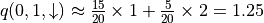
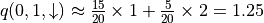
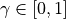
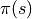
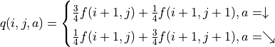

強化學習簡介¶
在本章，我們將對 深度強化學習 一節中所涉及的強化學習算法進行入門介紹。我們所熟知的有監督學習是在帶標籤的已知訓練數據上進行學習，得到一個從數據特徵到標籤的映射（預測模型），進而預測新的數據實例所具有的標籤。而強化學習中則出現了兩個新的概念，「智能體」和「環境」。在強化學習中，智能體通過與環境的交互來學習策略，從而最大化自己在環境中所獲得的獎勵。例如，在下棋的過程中，你（智能體）可以通過與棋盤及對手（環境）進行交互來學習下棋的策略，從而最大化自己在下棋過程中獲得的獎勵（贏棋的次數）。
如果說有監督學習關注的是「預測」，是與統計理論關聯密切的學習類型的話，那麼強化學習關注的則是「決策」，與計算機算法（尤其是動態規劃和搜索）有著深入關聯。筆者認爲強化學習的原理入門相較於有監督學習而言具有更高的門檻，尤其是給習慣於確定性算法的程式設計師突然呈現一堆抽象概念的數值疊代關係，在大多數時候只能是囫圇吞棗。於是筆者希望通過一些較爲具體的算例，以儘可能樸素的表達，爲具有一定算法基礎的讀者說明強化學習的基本思想。
從動態規劃說起¶
如果你曾經參加過NOIP或ACM之類的算法競賽，或者爲網際網路公司的機考做過準備（如LeetCode），想必對動態規劃（Dynamic Programming，簡稱DP）不會太陌生。動態規劃的基本思想是將待求解的問題分解成若干個結構相同的子問題，並保存已解決的子問題的答案，在需要的時候直接利用 1 。使用動態規劃求解的問題需要滿足兩個性質：
最優子結構：一個最優策略的子策略也是最優的。
無後效性：過去的步驟只能通過當前的狀態影響未來的發展，當前狀態是歷史的總結。
我們回顧動態規劃的經典入門題目 「數字三角形」 ：
數字三角形問題
給定一個形如下圖的  層數字三角形及三角形每個坐標下的數字
層數字三角形及三角形每個坐標下的數字  ，智能體在三角形的頂端，每次可以選擇向下（
，智能體在三角形的頂端，每次可以選擇向下（  ）或者向右（
）或者向右（  ）到達三角形的下一層，請輸出一個動作序列，使得智能體經過的路徑上的數字之和最大。
）到達三角形的下一層，請輸出一個動作序列，使得智能體經過的路徑上的數字之和最大。

數字三角形示例。此示例中最優動作序列爲「向右-向下」，最優路徑爲「(0, 0) - (1, 1) - (2, 1)」，最大數字和爲  。¶
。¶
我們先不考慮如何尋找最優動作序列的問題，而假設我們已知智能體在每個坐標(i, j)處會選擇的動作  （例如
（例如  代表智能體在(0, 0)處會選擇向右的動作），我們只是單純計算智能體會經過的路徑的數字之和。我們從下而上地考慮問題，設
代表智能體在(0, 0)處會選擇向右的動作），我們只是單純計算智能體會經過的路徑的數字之和。我們從下而上地考慮問題，設  爲智能體在坐標(i, j)處的「現在及未來將會獲得的數字之和」，則可以遞推地寫出以下等式：
爲智能體在坐標(i, j)處的「現在及未來將會獲得的數字之和」，則可以遞推地寫出以下等式：
(1)¶
上式的另一個等價寫法如下：
(2)¶![f(i, j) = [p_1 f(i+1, j) + p_2 f(i+1, j+1)] + r(i, j)](../../_images/math/9e4c2f6d79f84bc4cefd367c1242fe615dc4a515.png)
其中

有了上面的鋪墊之後，我們要解決的問題就變爲了：通過調整智能體在每個坐標(i, j)會選擇的動作 的組合，使得  的值最大。爲了解決這個問題，最粗暴的方法是遍歷所有 的組合，例如在示例圖中，我們需要決策
的值最大。爲了解決這個問題，最粗暴的方法是遍歷所有 的組合，例如在示例圖中，我們需要決策  、
、  、
、  的值，一共有
的值，一共有  種組合，我們只需要將8種組合逐個代入並計算 ，輸出最大值及其對應組合即可。
種組合，我們只需要將8種組合逐個代入並計算 ，輸出最大值及其對應組合即可。
不過，這樣顯然效率太低了。於是我們考慮直接計算 (2) 式關於所有動作  組合的最大值
組合的最大值  。在 (2) 式中， 與任何動作 都無關，所以我們只需考慮
。在 (2) 式中， 與任何動作 都無關，所以我們只需考慮  這個表達式的最大值。於是，我們分別計算
這個表達式的最大值。於是，我們分別計算  和
和  時該表達式關於任何動作 的最大值，並取兩個最大值中的較大者，如下所示：
時該表達式關於任何動作 的最大值，並取兩個最大值中的較大者，如下所示：
![\max_\pi f(i, j) &= \max_\pi [p_1 f(i+1, j) + p_2 f(i+1, j+1)] + r(i, j) \\
&= \max [\underbrace{\max_\pi(1 f(i+1, j) + 0 f(i+1, j+1))}_{\pi(i, j) = \downarrow}, \underbrace{\max_\pi(0 f(i+1, j) + 1 f(i+1, j+1))}_{\pi(i, j) = \searrow}] + r(i, j) \\
&= \max [\underbrace{\max_\pi f(i+1, j)}_{\pi(i, j) = \downarrow}, \underbrace{\max_\pi f(i+1, j+1)}_{\pi(i, j) = \searrow}] + r(i, j)](../../_images/math/216c0118c700082f830d23cfcb90c8fc07dd2bf7.png)
令  ，上式可寫爲
，上式可寫爲 ![g(i, j) = \max[g(i+1, j), g(i+1, j+1)] + r(i, j)](../../_images/math/81d9d1e63f1a6c10ba011bccc2a5b445aecdbc19.png) ，這即是動態規劃中常見的「狀態轉移方程」。通過狀態轉移方程和邊界值
，這即是動態規劃中常見的「狀態轉移方程」。通過狀態轉移方程和邊界值  ，我們即可自下而上高效地疊代計算出
，我們即可自下而上高效地疊代計算出  。
。

通過對  的值進行三輪疊代計算
的值進行三輪疊代計算  。在每一輪疊代中，對於坐標(i, j)，分別取得當 和 時的「未來將會獲得的數字之和的最大值」（即
。在每一輪疊代中，對於坐標(i, j)，分別取得當 和 時的「未來將會獲得的數字之和的最大值」（即  和
和  ），取兩者中的較大者，並加上當前坐標的數字 。¶
），取兩者中的較大者，並加上當前坐標的數字 。¶
加入隨機性和概率的動態規劃¶
在實際生活中，我們做出的決策往往並非完全確定地指向某個結果，而是同時受到環境因素的影響。例如選擇磨練棋藝固然能讓一個人贏棋的概率變高，但也並非指向百戰百勝。正所謂「既要靠個人的奮鬥，也要考慮到歷史的行程」。對應於我們在前節討論的數字三角形問題，我們考慮以下變種：
數字三角形問題（變式1）
智能體初始在三角形的頂端，每次可以選擇向下（ ）或者向右（ ）的動作。不過環境會對處於任意坐標(i, j)的智能體的動作產生「干擾」，導致以下的結果：
如果選擇向下（
），則該智能體最終到達正下方坐標(i+1, j)的概率爲  ，到達右下方坐標(i+1, j+1)的概率爲
，到達右下方坐標(i+1, j+1)的概率爲  。
。如果選擇向右（
），則該智能體最終到達正下方坐標(i+1, j)的概率爲 ，到達右下方坐標(i+1, j+1)的概率爲 。
請給出智能體在每個坐標所應該選擇的動作 ，使得智能體經過的路徑上的數字之和的期望（Expectation） 2 最大。
此時，如果你想直接寫出問題的狀態轉移方程，恐怕就不那麼容易了（動作選擇和轉移結果不是一一對應的！）。但如果類比前節 (2) 式描述問題的框架，我們會發現問題容易了一些。在這個問題中，我們沿用符號 來表示智能體在坐標(i, j)處的「現在及未來將會獲得的數字之和的期望」，則有「當前(i, j)坐標的期望 = 『選擇動作 後可獲得的數字之和』的期望 + 當前坐標的數字」，如下式
(3)¶
其中

類比前節的推導過程，令 ，我們可以得到
(4)¶![g(i, j) = \max[\underbrace{\frac{3}{4} g(i+1, j) + \frac{1}{4} g(i+1, j+1)}_{\pi(i, j) = \downarrow}, \underbrace{\frac{1}{4} g(i+1, j) + \frac{3}{4} g(i+1, j+1)}_{\pi(i, j) = \searrow}] + r(i, j)](../../_images/math/acde73d4b06bbf3cff2ce244f3e3221b08c0ae47.png)
然後我們即可使用這一遞推式由下到上計算 。

通過對 的值進行三輪疊代計算 。在每一輪疊代中，對於坐標(i, j)，分別計算當 和 時的「未來將會獲得的數字之和的期望的最大值」（即  和
和  ），取兩者中的較大者，並加上當前坐標的數字 。¶
），取兩者中的較大者，並加上當前坐標的數字 。¶
我們也可以從智能體在每個坐標(i, j)所做的動作 出發來觀察 (4) 式。在每一輪疊代中，先分別計算兩種動作帶來的未來收益期望（策略評估），然後取收益較大的動作作爲 的取值（策略改進），最後根據動作更新 。

策略評估-策略改進框架：通過對 的值進行疊代來計算 。在每一輪疊代中，對於坐標(i, j)，分別計算當 和 時的「未來將會獲得的數字之和的期望」（策略評估），取較大者對應的動作作爲 的取值（策略改進）。然後根據本輪疊代確定的 的值更新 。¶
我們可以將算法流程概括如下：
初始化環境
for i = N-1 downto 0 do
（策略評估）計算第i層中每個坐標(i, j)選擇
和 的未來期望  和
和 
（策略改進）對第i層中每個坐標(i, j)，取未來期望較大的動作作爲
的取值（值更新）根據本輪疊代確定的
的值更新 
環境信息無法直接獲得的情況¶
讓我們更現實一點：在很多現實情況中，我們甚至連環境影響所涉及的具體概率值都不知道，而只能通過在環境中不斷試驗去探索總結。例如，當學習了一種新的圍棋定式時候，我們並無法直接獲得勝率提升的概率，只有與對手使用新定式實戰多盤才能知道這個定式是好是壞。對應於數字三角形問題，我們再考慮以下變式：
數字三角形問題（變式2）
智能體初始在三角形的頂端，每次可以選擇向下（ ）或者向右（ ）的動作。環境會對處於任意坐標(i, j)的智能體的動作產生「干擾」，而且這個干擾的具體概率（即上節中的  和
和  ）未知。不過，允許在數字三角形的環境中進行多次試驗。當智能體在坐標(i, j)時，可以向數字三角形環境發送動作指令 或 ，數字三角形環境將返回智能體最終所在的坐標（正下方(i+1, j)或右下方(i+1, j+1)）。請設計試驗方案和流程，確定智能體在每個坐標所應該選擇的動作 ，使得智能體經過的路徑上的數字之和的期望最大。
）未知。不過，允許在數字三角形的環境中進行多次試驗。當智能體在坐標(i, j)時，可以向數字三角形環境發送動作指令 或 ，數字三角形環境將返回智能體最終所在的坐標（正下方(i+1, j)或右下方(i+1, j+1)）。請設計試驗方案和流程，確定智能體在每個坐標所應該選擇的動作 ，使得智能體經過的路徑上的數字之和的期望最大。
我們可以通過大量試驗來估計動作爲 或 時概率 和 的值，不過這在很多現實問題中是困難的。事實上，我們有另一套方法，使得我們不必顯式估計環境中的概率參數，也能得到最優的動作策略。
回到前節的「策略評估-策略改進」框架，我們現在遇到的最大困難是無法在「策略評估」中通過前一階段的 、 和概率參數 、 直接計算每個動作的未來期望  （因爲概率參數未知）。不過，期望的妙處在於：就算我們無法直接計算期望，我們也是可以通過大量試驗估計出期望的。如果我們用
（因爲概率參數未知）。不過，期望的妙處在於：就算我們無法直接計算期望，我們也是可以通過大量試驗估計出期望的。如果我們用  表示智能體在坐標(i, j)選擇動作a時的未來期望 3 ，則我們可以觀察智能體在(i, j)處選擇動作a後的K次試驗結果，取這K次結果的平均值作爲估計值。例如，當智能體在坐標(0, 1)並選擇動作 時，我們進行20次試驗，發現15次的結果爲1，5次的結果爲2，則我們可以估計  。
表示智能體在坐標(i, j)選擇動作a時的未來期望 3 ，則我們可以觀察智能體在(i, j)處選擇動作a後的K次試驗結果，取這K次結果的平均值作爲估計值。例如，當智能體在坐標(0, 1)並選擇動作 時，我們進行20次試驗，發現15次的結果爲1，5次的結果爲2，則我們可以估計  。
於是，我們只需將前節「策略評估」中的未來期望計算，更換爲使用試驗估計  和
和  時的未來期望 ，即可在環境概率參數未知的情況下進行「策略評估」步驟。值得一提的是，由於我們不需要顯式計算期望 ，所以我們也無須關心 的值了，前節值更新的步驟也隨之省略（事實上，這裡 已經取代了前節 的地位）。
時的未來期望 ，即可在環境概率參數未知的情況下進行「策略評估」步驟。值得一提的是，由於我們不需要顯式計算期望 ，所以我們也無須關心 的值了，前節值更新的步驟也隨之省略（事實上，這裡 已經取代了前節 的地位）。
還有一點值得注意的是，由於試驗是一個從上而下的步驟，需要算法爲整個路徑均提供動作，那麼對於那些尚未確定動作 的坐標應該如何是好呢？我們可以對這些坐標使用「隨機動作」，即50%的概率選擇 ，50%的概率選擇 ，以在試驗過程中對兩種動作均進行充分的「探索」。

將前節「策略評估」中的未來期望計算，更換爲使用試驗估計 和 時的未來期望 。¶
我們可以將算法流程概括如下：
初始化q值
for i = N-1 downto 0 do
（策略評估）試驗估計第i層中每個坐標(i, j)選擇
和 的未來期望  和
和 
（策略改進）對第i層中每個坐標(i, j)，取未來期望較大的動作作爲
的取值
從直接算法到疊代算法¶
到目前爲止，我們都非常嚴格地遵循了動態規劃中「劃分階段」的思想，即按照問題的時間特徵將問題分成若干個階段並依次求解。對應到數字三角形問題中，即從下到上逐層計算和更新未來期望（或q值），每一輪疊代中更新本層的未來期望（或q值）。在這個過程中，我們很確定，經過N次策略評估和策略改進後，算法將停止，而我們可以獲得精確的最大數字和和最優動作。我們將這種算法稱爲「直接算法」，這也是我們在各種算法競賽中常見的算法類型。
不過在實際場景中，算法的計算時間往往是有限的，因此我們可能需要算法具有較好的「漸進特性」，即並不要求算法輸出精確的理論最優解，只需能夠輸出近似的較優解，且解的質量隨著疊代次數的增加而提升。我們往往稱這種算法爲「疊代算法」。對於數字三角形問題，我們考慮以下變式：
數字三角形問題（變式3）
智能體初始在三角形的頂端，每次可以選擇向下（ ）或者向右（ ）的動作。環境會對處於任意坐標(i, j)的智能體的動作產生「干擾」，而且這個干擾的具體概率未知。允許在數字三角形的環境中進行 K 次試驗（K可能很小也可能很大）。請設計試驗方案和流程，確定智能體在每個坐標所應該選擇的動作 ，使得智能體經過的路徑上的數字之和的期望儘可能大。
爲了解決這個問題，我們不妨從更高的層次來審視我們目前的算法做了什麼。其實算法的主體是交替進行「策略評估」和「策略改進」兩個步驟。其中，
「策略評估」根據智能體在坐標(i, j)的動作
，評估在這套動作組合下，智能體在坐標(i, j)選擇動作a的未來期望 。「策略改進」根據上一步計算出的
，選擇未來期望最大的動作來更新動作 。
事實上，這一「策略評估」和「策略改進」的交替步驟並不一定需要按照層的順序自下而上進行。我們只要確保算法能根據有限的試驗結果「儘量」反覆進行策略評估和策略改進，就能讓算法輸出的結果「漸進」地越變越好。於是，我們考慮以下算法流程
初始化
和 repeat
固定智能體的動作
的取值，進行k次試驗（試驗時加入一些隨機擾動，使得能「探索」更多動作組合，上節也有類似操作）。（策略評估）根據當前k次試驗的結果，調整智能體的未來期望
的取值，使得 的取值「儘量」能夠真實反映智能體在當前動作 下的未來期望（上節是精確調整 4 至等於未來期望）。（策略改進）根據當前
的值，選擇未來期望較大的動作作爲 的取值。
until 所有坐標的q值都不再變化，或總試驗次數大於K
爲了理解這個算法，我們不妨考慮一種極端情況：假設每輪疊代的試驗次數k的值足夠大，則策略評估步驟中可以將 精確調整爲完全等於智能體在當前動作 下的未來期望，事實上就變成了上節算法的「粗放版」（上節的算法每次只更新一層的 值爲精確的未來期望，這裡每次都更新了所有的 值。在結果上沒有差別，只是多了一些冗餘計算）。
上面的算法只是一個大致的框架介紹。爲了具體實現算法，我們接下來需要討論兩個問題：一是如何根據k次試驗的結果更新智能體的未來期望 ，二是如何在試驗時加入隨機的探索機制。
q值的漸進性更新¶
當每輪疊代的試驗次數k足夠大、覆蓋的情形足夠廣，以至於每個坐標(i, j)和動作a的組合都有足夠多的數據的時候，q值的更新很簡單：根據試驗結果爲每個(i, j, a)重新計算一個新的  ，並替換原有數值即可。
，並替換原有數值即可。
可是現在，我們一共只有較少的k次試驗結果（例如5次或10次）。儘管這k次試驗是基於當前最新的動作方案 來實施的，可一是次數太少統計效應不明顯，二是原來的q值也不見得那麼不靠譜（畢竟每次疊代並不見得會把 更改太多）。於是，相比於根據試驗結果直接計算一個新的q值  並覆蓋原有值（我們在前面的直接算法里一直都是這樣做的 5 ）：
並覆蓋原有值（我們在前面的直接算法里一直都是這樣做的 5 ）：
(5)¶
一個更聰明的方法是「漸進」地更新q值。也就是說，我們把舊的q值向當前試驗的結果 稍微「牽引」一點，作爲新的q值，從而讓新的q值更貼近當前試驗的結果 ，即
(6)¶
其中參數  控制牽引的「力度」（牽引力度爲1時，就退化爲了使用試驗結果直接覆蓋q值的 (5) 式，不過我們一般會設一個小一點的數字，比如0.1或0.01）。通過這種方式，我們既加入了新的試驗所帶來的信息，又保留了部分舊的知識。其實很多疊代算法都有類似的特點。
控制牽引的「力度」（牽引力度爲1時，就退化爲了使用試驗結果直接覆蓋q值的 (5) 式，不過我們一般會設一個小一點的數字，比如0.1或0.01）。通過這種方式，我們既加入了新的試驗所帶來的信息，又保留了部分舊的知識。其實很多疊代算法都有類似的特點。
不過， 的值只有當一次試驗完全做完的時候才能獲得。也就是說，只有走到了數字三角形的最底層，才能知道路徑途中的每個坐標到路徑最底端的數字之和（從而更新路徑途中的所有坐標的q值）。這在有些場景會造成效率的低下，所以我們在實際更新時往往使用另一種方法，使得我們每走一步都可以更新一次q值。具體地說，假設某一次試驗中我們在數字三角形的坐標(i, j)處，通過執行動作  （
（  代表加上一些探索擾動）而跳到了坐標(i’,j’)（即「走一步」，可能是(i+1, j)，也可能是(i+1, j+1)），然後又在坐標(i’,j’)執行了動作
代表加上一些探索擾動）而跳到了坐標(i’,j’)（即「走一步」，可能是(i+1, j)，也可能是(i+1, j+1)），然後又在坐標(i’,j’)執行了動作  。這時我們可以用
。這時我們可以用  來近似替代之前的 ，如下式所示：
來近似替代之前的 ，如下式所示：
(7)¶
我們甚至可以不需要試驗結果中的  ，而使用在坐標(i’, j’)時兩個動作對應的q值的較大者
，而使用在坐標(i’, j’)時兩個動作對應的q值的較大者 ![\max[q(i', j', \downarrow), q(i', j', \searrow)]](../../_images/math/c2a42f4c5fdd132bb9e491f72bb751332c448310.png) 來代替
來代替  ，如下式：
，如下式：
(8)¶![q_{\text{new}}(i, j, a) \leftarrow q_{\text{old}}(i, j, a) + \alpha\big(\underbrace{r(i', j') + \max[q(i', j', \downarrow), q(i', j', \searrow)]}_{\text{target}} - q_{\text{old}}(i, j, a)\big)](../../_images/math/baf7c525dd74dc28da7bca242c2645153e564685.png)
探索策略¶
對於我們前面介紹的，基於試驗的算法而言，由於環境裡的概率參數是未知的（類似於將環境看做黑盒），所以我們在試驗時一般都需要加入一些隨機的「探索策略」，以保證試驗的結果能覆蓋到比較多的情況。否則的話，由於智能體在每個坐標都具有固定的動作 ，所以試驗的結果會受到極大的限制，導致陷入局部最優的情況。考慮最極端的情況，假若我們回到本節之初的原版數字三角形問題（環境確定、已知且不受概率影響），當動作 也固定時，無論進行多少次試驗，結果都是完全固定且唯一的，使得我們沒有任何改進和優化的空間。
探索的策略有很多種，在此我們介紹一種較爲簡單的方法：設定一個概率比例  ，以 的概率隨機生成動作（ 或 ），以
，以 的概率隨機生成動作（ 或 ），以  的概率選擇動作 。我們可以看到，當
的概率選擇動作 。我們可以看到，當  時，相當於完全隨機地選取動作。當
時，相當於完全隨機地選取動作。當  時，則相當於沒有加入任何隨機擾動，直接選擇動作 。一般而言，在疊代初始的時候 的取值較大，以擴大探索的範圍。隨著疊代次數的增加， 的值逐漸變優， 的取值會逐漸減小。
時，則相當於沒有加入任何隨機擾動，直接選擇動作 。一般而言，在疊代初始的時候 的取值較大，以擴大探索的範圍。隨著疊代次數的增加， 的值逐漸變優， 的取值會逐漸減小。
大規模問題的求解¶
算法設計有兩個永恆的指標：時間和空間。通過將直接算法改造爲疊代算法，我們初步解決了算法在時間消耗上的問題。於是我們的下一個挑戰就是空間消耗，這主要體現在q值的存儲上。在前面的描述中，我們不斷疊代更新 的值。這默認了我們在內存中建立了一個  的三維數組，可以記錄並不斷更新q值。然而，假若N很大，而計算機的內存空間又很有限，那我們該怎麼辦呢？
的三維數組，可以記錄並不斷更新q值。然而，假若N很大，而計算機的內存空間又很有限，那我們該怎麼辦呢？
我們來思考一下，當我們具體實現 時，我們需要其能夠實現的功能有二：
q值映射：給定坐標(i, j)和動作a（
或 ），可以輸出一個 值。q值更新：給定坐標(i, j)、動作a和目標值target，可以更新q值映射，使得更新後輸出的
距離目標值target更近。
事實上，我們有不少近似方法，可以讓我們在不使用太多內存的情況下實現一個滿足以上兩個功能的 。這裡介紹一種最流行的方法，即使用深度神經網絡近似實現 ：
q值映射：將坐標(i, j)輸入深度神經網絡，網絡輸出在坐標(i, j)下的所有動作的q值（即
和 ）。q值更新：給定坐標(i, j)、動作a和目標值target，將坐標(i, j)輸入深度神經網絡，網絡輸出在坐標(i, j)下的所有動作的q值，取其中動作爲a的q值爲
，並定義損失函數  ，使用優化器（例如梯度下降）對該損失函數進行一步優化。此處優化器的步長和上文中的「牽引參數」 作用類似。
，使用優化器（例如梯度下降）對該損失函數進行一步優化。此處優化器的步長和上文中的「牽引參數」 作用類似。

對於數字三角形問題，左圖爲使用三維數組實現 ，右圖爲使用深度神經網絡近似實現 ¶
總結¶
儘管我們在前文中並未提及「強化學習」一詞，但其實我們在對數字三角形問題各種變式的討論中，已經涉及了很多強化學習的基本概念及算法，在此列舉：
在第二節中，我們討論了基於模型的強化學習（Model-based Reinforcement Learning），包括值疊代（Value Iteration）和策略疊代（Policy Iteration）兩種方法。
在第三節中，我們討論了無模型的強化學習（Model-free Reinforcement Learning）。
在第四節中，我們討論了蒙特卡羅方法（Monte-Carlo Method）和時間差分法（Temporial-Difference Method），以及SARSA和Q-learning兩種學習方法。
在第五節中，我們討論了使用Q網絡（Q-Network）近似實現Q函數來進行深度強化學習（Deep Reinforcement Learning）。
其中部分術語對應關係如下：
數字三角形的坐標(i, j)被稱爲狀態（State），用
 表示。狀態的集合用
表示。狀態的集合用  表示。
表示。智能體的兩種動作
和 被稱爲動作（Action），用  表示。動作的集合用
表示。動作的集合用  表示。
表示。數字三角形在每個坐標的數字
被稱爲獎勵（Reward），用  （只與狀態有關）或
（只與狀態有關）或  （與狀態和動作均有關）表示。獎勵的集合用
（與狀態和動作均有關）表示。獎勵的集合用  表示。
表示。數字三角形環境中的概率參數
和 被稱爲狀態轉移概率（State Transition Probabilities），用一個三參數函數  表示，代表在狀態s進行動作a到達狀態s’的概率。
表示，代表在狀態s進行動作a到達狀態s’的概率。狀態、動作、獎勵、狀態轉移概率，外加一個時間折扣係數  的五元組構成一個馬爾可夫決策過程（Markov Decision Process，簡稱MDP）。數字三角形問題中
 。
。第二節中MDP已知的強化學習稱爲基於模型的強化學習，第三節MDP的狀態轉移概率未知的強化學習稱爲無模型的強化學習。
智能體在每個坐標 (i, j) 處會選擇的動作
被稱爲策略（Policy），用  表示。智能體的最優策略用  表示。
表示。第二節中，當策略
一定時，智能體在坐標(i, j)處 「現在及未來將會獲得的數字之和的期望」 被稱爲狀態-價值函數（State-Value Function），用  表示。智能體在坐標(i, j)處「未來將會獲得的數字之和的期望的最大值」 被稱爲最優策略下的狀態-價值函數，用
表示。智能體在坐標(i, j)處「未來將會獲得的數字之和的期望的最大值」 被稱爲最優策略下的狀態-價值函數，用  表示。
表示。第三節中，當策略
一定時，智能體在坐標(i, j)處選擇動作a時 「現在及未來將會獲得的數字之和的期望」 被稱爲動作-價值函數（Action-Value Function），用  表示。最優策略下的狀態-價值函數用
表示。最優策略下的狀態-價值函數用  表示。
表示。在第三節和第四節中，使用試驗結果直接取均值估計
的方法，稱爲蒙特卡羅方法。 (7) 中用 來近似替代的 的方法稱爲時間差分法， (7) 的q值更新方法本身稱爲SARSA方法。 (8) 稱之爲Q-learning方法。
推薦閱讀
如果讀者希望進一步理解強化學習相關知識，可以參考
SJTU Multi-Agent Reinforcement Learning Tutorial （簡明的強化學習入門幻燈片）
強化學習知識大講堂 （內容廣泛的中文強化學習專欄）
郭憲, 方勇純. 深入淺出強化學習：原理入門. 電子工業出版社, 2018. （較爲通俗易懂的中文強化學習入門教程）
Richard S. Sutton, Andrew G. Barto. 強化學習（第二版）. 電子工業出版社, 2019. （較爲系統理論的經典強化學習教材）
- 1
所以有時又被稱爲「記憶化搜索」，或者說記憶化搜索是動態規劃的一種具體實現形式。
- 2
期望是試驗中每次可能結果的概率乘以其結果的總和，反映了隨機變量平均取值的大小。例如，你在一次投資中有
的概率賺100元，有 的概率賺200元，則你本次投資賺取金額的期望爲  元。也就是說，如果你重複這項投資多次，則所獲收益的平均值趨近於175元。
元。也就是說，如果你重複這項投資多次，則所獲收益的平均值趨近於175元。- 3
作爲參考，在前節中， 
- 4
這裡和下文中的「精確」都是相對於疊代算法的有限次試驗而言的。只要是基於試驗的方法，所獲得的期望都是估計值。
- 5
不過在這裡，如果我們在疊代第一步的試驗時加入了隨機擾動的「探索策略」的話，這樣計算是不太對的。因爲k次試驗結果受到了探索策略的影響，導致我們所評估的其實是隨機擾動後的動作
，使得我們根據試驗結果統計出的 存在偏差。爲了解決這個問題，我們有兩種方法。第一種方法是把隨機擾動的「探索策略」加到第三步策略改進選擇最大期望的過程里，第二種則需要採用一種叫做「重要度採樣」（Importance Sampling）的方法。由於我們真實採用的q值更新方法多是後面介紹的時間差分方法，所以這裡省略關於重要度採樣的介紹，有需要的讀者可參考文末列出的強化學習相關文獻進行了解。